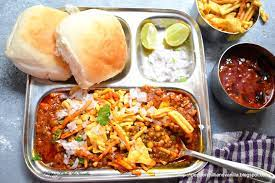

FOODS

Pav Bhaji is a native Maharashtrian dish made with an assortment of mashed vegetables, pan-fried on a large tawa and served with Pav toasted in butter. It is immensely popular all across the country because of its spicy and tangy zest. The generous dose of butter that is often used with freshly-cut onions and lemon juice tops the dish. Pav Bhaji is also a great way to feed fussy kids their share of veggies with a smile! You can also serve Pav Bhaji in a bruschetta/canapé style for your next party.

Misal Pav
Misal pav is a popular Maharashtrian street food of usal (sprouts curry) topped with onions, tomatoes, farsan (fried savory mixture), lemon juice, coriander leaves and served with a side of soft pav (Indian dinner rolls). The sprouts curry is made from moth bean sprouts. This misal recipe is a tasty and filling vegan dish that can be served as breakfast, lunch or brunch.

Vada Pav
A popular Indian street food recipe prepared mainly with pav bread and deep-fried batata vada stuffing. Most commonly, this snack is also referred to as Indian burger or Bombay burger because it hails from Maharashtra or Marathi cuisine. Generally, it is served as an evening snack, but can also be adapted to breakfast.